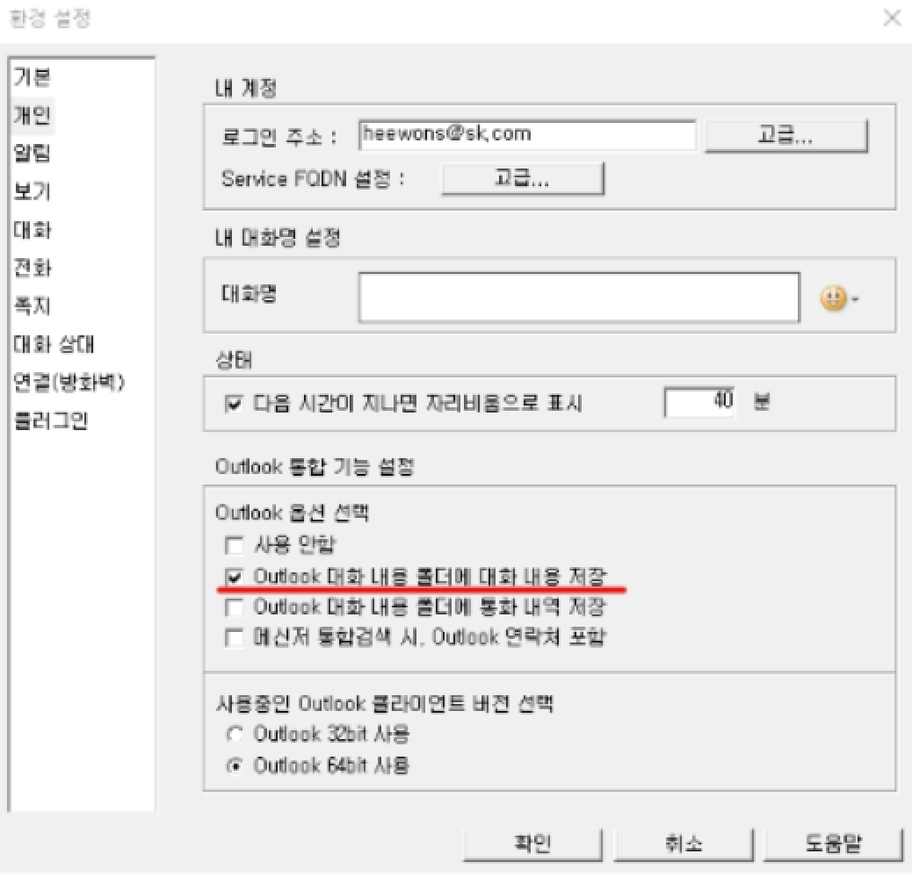

구성원들과의 소통에 필수적인 메일!
메일 작성하다 생긴 어려운 상황들, 어떻게 해결할 수 있을까요?
■ Case1. 메일을 잘못 보냈어요! <메일 회수하기>
■ Case2. 용량이 큰 첨부파일을 보내야해요. <대용량 메일 및 파일 전송하기>
■ Case3. 사내 메일 용량이 너무 작아요. <Outlook 용량 늘리기 1G/3G>
■ Case4. 네이트온과 연동할 수 있나요? =<네이트온 쪽지와 Outlook 연동하기>
■ Case5. 네이트온 대화 내용을 저장하고 싶어요. <네이트온 Biz 채팅 Outlook 폴더에 저장하기>
네이트온 Biz. 설정 > “환경 설정” > 개인 > Outlook 통합기능 설정
사용 안함을 한번 클릭하면 체크가 해제됩니다.
아래 Outlook 대화 내용 폴더에 대화 내용 저장 체크를 눌러주세요.
